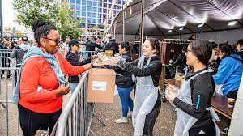
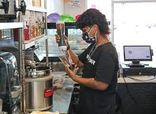
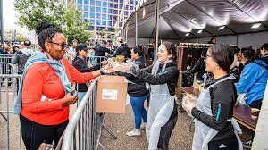
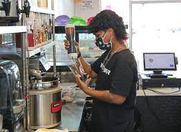

Karar Alhakim
Enter bio here
Enter bio here
My name is Karar Alhakim, I am from San Francisco California, and I am currently studying at UC Riverside in Biology. I plan to attend a nursing program after college and I am currently looking for more volunteer oppourtinity. I have always been amused by biology as I would be included in a lot of science club throughout my high school. When I am not in school doing work I am usually either working out or working at my currnet job as a server. In my free time I like to hangout with my friends and with my dog. I have always worked in the food isdustry growing up, my first job was at a chiptole and I worked as the casheir as well as the server and grillsmen. I worked at the company for two years and worekd my way up to kitchen manager. As kitchen manager my main role was maintain our food safety as well as keep the kithcen in good conditions.
Experience
Developer
• Worked at Chipotle as kithcen manager for two years
• Volunteer at hot chocolate marathon, helped supplied runners with water
• Experience as a bariasta at 1011 sip tea
Teaching Assistant
• Ran sessions to help students learn how to code
• Reviewed and graded student coding projects
• Created educational content to help promote student education
• TA'd for over 400 students each academic quarter
Education
UC Riverside
Portfolio



 